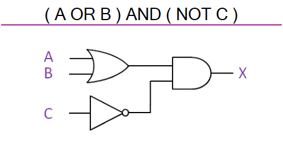
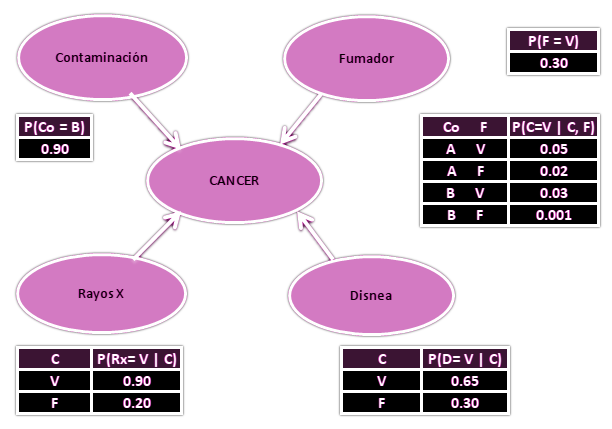
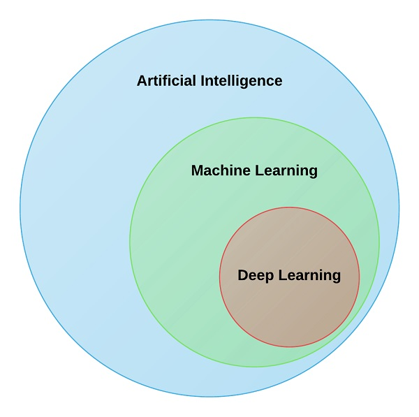
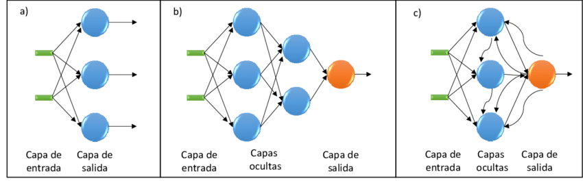

Herramientas de la Inteligencia Artificial
El campo de la Inteligencia Artificial ha desarrollado un gran número de herramientas para resolver todo tipo de problemas complejos. A continuación se presentan algunas de las más extendidas.
Búsqueda y optimización
Muchos problemas en IA se resuelven buscando de forma inteligente entre muchas soluciones posibles. El razonamiento, a menudo, puede reducirse a realizar una búsqueda. Por ejemplo, una prueba lógica puede verse como una búsqueda de un camino que lleve de las premisas a las conclusiones, donde cada paso es la aplicación de una regla de inferencia. Planificar algoritmos de búsqueda a través de árboles de metas y submetas, tratando de encontrar un camino al objetivo, es un proceso denominado análisis de medios y fines. Los algoritmos robóticos utilizan búsquedas locales en la configuración espacial para mover articulaciones e interactuar con objetos.
Sin embargo, las búsquedas exhaustivas simples son a menudo insuficientes para muchos problemas del mundo real, ya que el espacio de búsqueda rápidamente crece hasta números astronómicos. Esto resulta en búsquedas demasiado lentas o que nunca terminarán. La solución es, a menudo, utilizar heurísticos, reglas que priorizan elecciones a favor de aquellas opciones que tienen más probabilidades de alcanzar una meta en el menor número de pasos, en lugar de buscar exhaustivamente la respuesta correcta. Los heurísticos proporcionan al programa unua "suposición" del camino en el que se encuentra la solucion, limitando el espacio de búsqueda a un conjunto más reducido de opciones.
 Otro tipo diferente de búsqueda que se extendió en los 90 se basa en la teoría matemática de la optimización. Para muchos problemas, es posible empezar una búsqueda con algún tipo de suposición, y luego refinar ésta incrementalmente hasta que no se puedan hacer más refinamientos.
Otro tipo diferente de búsqueda que se extendió en los 90 se basa en la teoría matemática de la optimización. Para muchos problemas, es posible empezar una búsqueda con algún tipo de suposición, y luego refinar ésta incrementalmente hasta que no se puedan hacer más refinamientos.
La computación evolutiva es la rama de la Inteligencia Artificial dedicada a los problemas de optimización combinatoria, inspirándose en los mecanismos de la evolución biológica. Por ejemplo, pueden comenzar con una población de organismos (las suposiciones), y después permitirles mutar y recombinarse, seleccionando sólo las mejor adaptadas para sobrevivir cada generación (refinando las suposiciones). Alternativamente, también existen procesos distribuidos de búsqueda que se cordinan por algoritmos de inteligencia de enjambre, como la optimización por enjambre de partículas (inspirada por el comportamiento de los pájaros) o el algoritmo de la colonia de hormigas (inspirada en el comportamiento de las hormigas).
Lógica
La lógica se utiliza para la representación de conocimientos y solución de problemas. En IA se utilizan diferentes formas de lógica:
- Lógica proposicional: basada en operadores como AND y OR
- Lógica de primer orden: añade cuantificadores y predicados, y expresa hechos sobre objetos, sus propiedades y relaciones entre ellos.
- Lógica difusa: añade el concepto de "grado de verdad" (entre 0 y 1) para afirmaciones que no se pueden considerar completamente ciertas o falsas.
- Lógica no-monotónica: implica razonamientos "por defecto".
Sin embargo, la lógica simbólica cualitativa es frágil y se derrumba ante la presencia de ruido o incertidumbre. Existen numerosas excepciones a reglas, y es difícil para los sistemas lógicos funcionar en presencia de reglas contradictorias.
Métodos probabilísticos
Muchos problemas en IA (como el razonamiento, planificación, aprendizaje, percepción o robótica) requieren que el agente opere con información incompleta o incierta. Los investigadores en IA han desarrollado un número de poderosas herramientas para resolver estos problemas, utilizando métodos procedentes de la teoría de la probabilidad o de la economía.
Las redes bayesianas son una herramienta general que puede ser utilizada para un gran número de problemas: razonamiento (utilizando el algoritmo de inferencia bayesiano), aprendizaje (utilizando el algoritmo de esperanza-maximización), planificación (utilizando redes de decisión) y percepción (utilizando redes bayesianas dinámicas). Los algoritmos probabilísticos también se pueden utilizar para filtrar, predecir y encontrar explicaciones para corrientes de datos, ayudando a los sistemas de percepción a analizar procesos que ocurren a lo largo del tiempo. Sin embargo, en comparación con la lógica simbólica, las inferencias bayesianas formales requieren muchos recursos computacionales.
Desde la perspectiva de la economía, un concepto clave es el de la "utilidad": una medida de lo valioso que es algo para un agente inteligente. Se han desarrollado múltiples herramientas matemáticas precisas para analizar cómo un agente puede tomar decisiones y planificar, a partir de la Teoría de la decisión, el análisis de decisiones, y la teoría del valor de la información. Algunas de estas herramientas son los procesos de decisión de Markov, redes de decisión dinámicas, la teoría de juegos y diseño de mecanismos.
Métodos de aprendizaje estadístico y clasificación
Para el aprendizaje y entrenamiento de las IA, existen acercamientos basados en clasificación estadística, funciones que permiten comparar patrones para encontrar el que más se aproxima a lo que se busca; y en machine learning: el empleo de algoritmos y modelos estadísticos para mejorar progresivamente el rendimiento en una tarea, a partir de conjuntos de datos de entrenamiento, de forma que el sistema pueda realizar predicciones o tomar decisiones sin estar explícitamente programado para la tarea.
El algoritmo más utilizado es el aprendizaje por árbol de decisión, un modelo predictivo que a partir de una observación de un elemento, alcanza conclusiones sobre el valor del elemento respecto a la meta. Es uno de los métodos más utilizados en estadística, minería de datos y machine learning.
Redes neuronales artificiales
Las redes neuronales están basadas en la arquitectura del cerebro humano. Una sola "neurona" recibe una entrada desde múltiples otras, cada una de las cuales, cuando se activan, tienen un "peso" que, en conjunto, determinará si la neurona se activa o no. Una red neuronal no es un algoritmo, sino un marco de trabajo para que muchos algoritmos distintos de machine learning trabajen en conjunto para procesar conjuntos de información. De esta forma, los sistemas "aprenden" a realizar tareas sin necesidad de ser programados con unas reglas específicas.

El aprendizaje requiere ajustar estos pesos en la activación, a partir de los datos de entrenamiento. El algoritmo más simple y utilizado es el basado en el aprendizaje hebbiano, el cual incrementa el peso que una neurona tiene sobre otra cuando la activación de la primera consigue activar la otra exitosamente. De esta forma, las redes forman "conceptos" distribuidos en subredes de neuronas que tienden a activarse juntas.
Los dos tipos más importantes de redes neuronales son:
- Redes neuronales prealimentadas o "acíclicas": redes donde las conexiones entre nodos no forman un ciclo, y por tanto el flujo de información va en una sola dirección (de la entrada a la salida de información).
- Redes neuronales recurrentes (RNN): redes donde las conexiones entre nodos permiten retroalimentación y memoria a corto plazo de eventos de entrada anteriores.
En los últimos años, los avances tecnológicos han impulsado el aprendizaje profundo o deep learning: el aprendizaje de cualquier red neuronal artificial capaz de aprender largas cadenas de relaciones causales, con o sin supervisión, y que permite diferentes niveles de representación de conceptos según el nivel de abstracción.

Las redes neuronales profundas han transformado muchos campos de la IA en los últimos años, incluyendo la visión artificial, el reconocimiento de voz o el procesamiento del lenguaje natural.